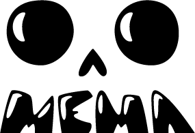
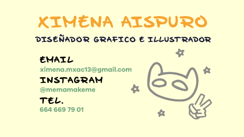
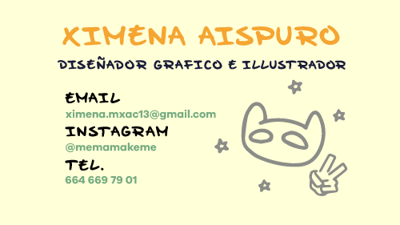

Graphic design student and freelancer
Monster Shock is a short animation about a young monster wandering on the night of Halloween, when he meets a squeleton that helps him get home. It is a beautiful clash of both Halloween and Day of the Dead that represents harmony between cultures and, of course, cuteness!
The skeleton was made behind the idea of a character that would represent the holiday of day of the dead, while still being simplistic enough to manipulate as little elements as possible while animating.
This portrait was commisioned by a client who had just lost their two cats. The illsutration was made to seem peaceful and cute. A single textured brush was used for the whole portrait, from the line art, to the coloring.
Here are some of the sketches that were presented to the client. They asked for the cats to be posed in a way that asimilates Yin and Yang

Toto is a supernatural human that can control the kinetic energy of objects and people he touches, even his own body. He was made with a dark color palette to not stand out when fighting enemies, as well as to represent his own moral compass.

Mema's Socks is an organic script style font that was created with my own handwriting. It is playful and lighthearted which can represents my personality in a fun and childish way.
 
